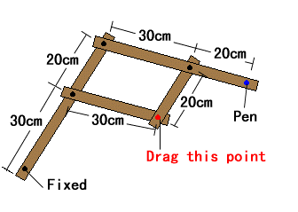

|
"Pantograph" is a drawing instrument to magnify figures. Tracing the original figure by moving the red point, we can automatically obtain the magnified figure with the pen at the blue point. Find the ratio of magnification when the lengths of the arms are defined in the right figure. |  |
How to use the applet
|